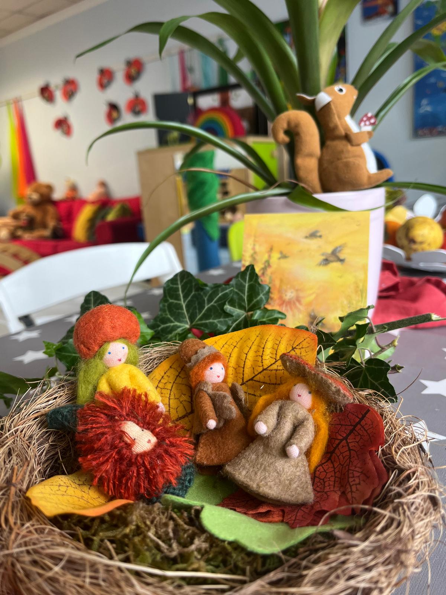
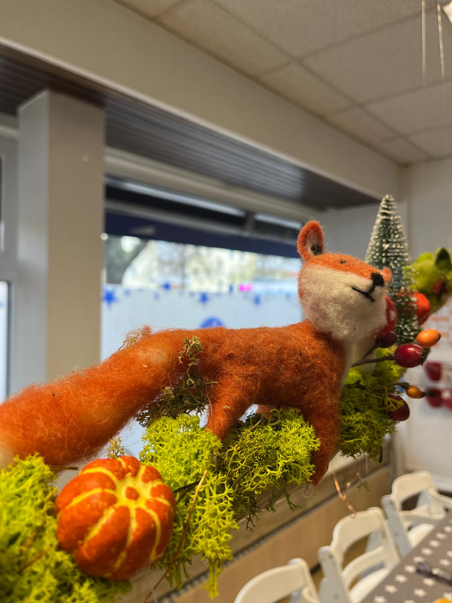
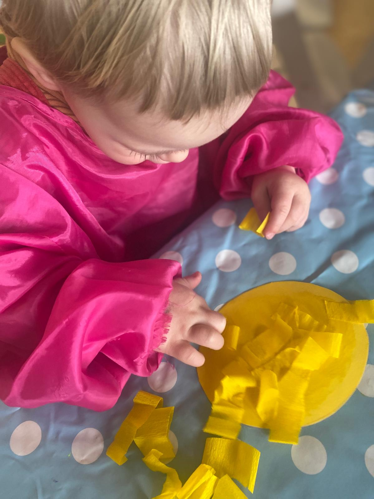
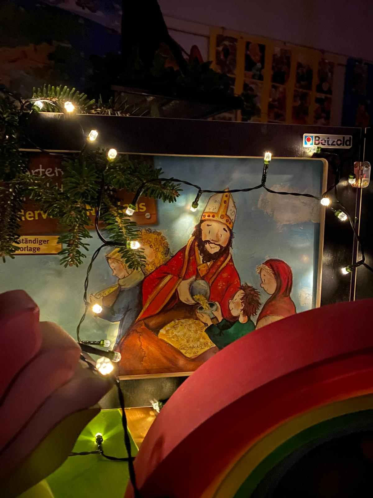
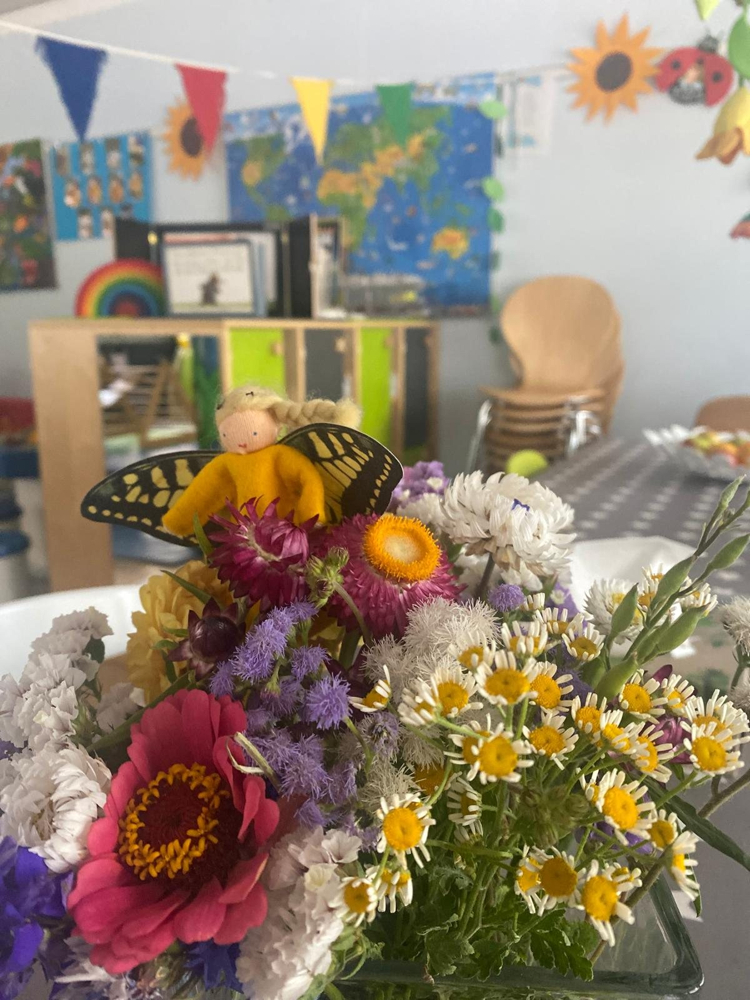
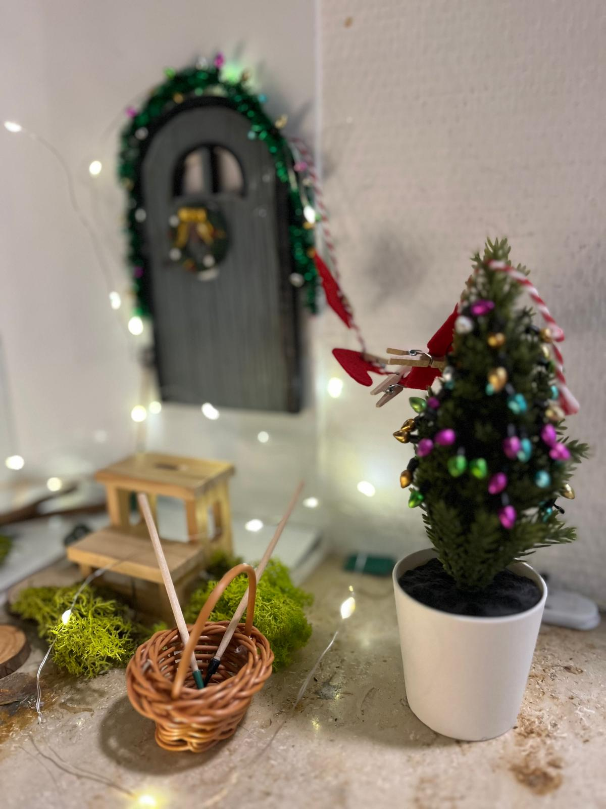

Kinder entdecken die Welt selbst.
Eine Großtagespflege in Freiburg-Zähringen. Wir geben Kindern ab 10 Monaten einen sicheren, liebevollen Ort, an dem sie in ihrem eigenen Tempo die Welt entdecken.
- bis zu 9Kinder gleichzeitig
- Mo–Fr, 8–14 UhrBetreuungszeit
- seit 2015in Zähringen


Über uns
Das Leben anzuregen – und es sich dann frei entwickeln zu lassen – hier liegt die erste Aufgabe des Erziehers.Maria Montessori
Wir bieten Kindern einen sicheren und liebevollen Rahmen, in dem sich jedes in seinem eigenen Tempo entwickeln kann. Im Mittelpunkt steht das beobachtete Freispiel, dazu kommen Kreativität sowie Erfahrungen mit Tieren und Natur. Mit den Eltern verstehen wir uns als Erziehungspartner. Für das Kind möchten wir wie eine Erweiterung der Familie sein: ein Ort, an dem es angenommen und geborgen ist.
Daniela Brekalo
Tagesmutter
Hat Geschichte, Deutsch und Latein studiert und ist Fremdsprachenkorrespondentin. Verheiratet, Mutter von zwei Töchtern. Leseratte und kreativer Kopf der Sternenreiter.
Najat Zarouali
Tagesmutter
Hat marokkanische Wurzeln und ist gelernte Einzelhandelskauffrau. Verheiratet, Mutter von drei Kindern. Mit ihrer besonnenen, humorvollen Art ist sie der Ruhepol im Team: sanft, aber bestimmt, und organisatorisch unersetzlich.
Die beiden Tagesmütter kennen sich seit der Kindergartenzeit ihrer ältesten Töchter und haben sich gemeinsam im Elternbeirat engagiert, zum Beispiel für qualifizierten Islamunterricht an der Tulla-Grundschule. Toleranz, Akzeptanz und Respekt sind Werte, die sie teilen. Im Frühjahr 2015 haben sie sich zur Großtagespflege Sternenreiter zusammengeschlossen.
Unsere Springerin besucht uns an einem festen Kontakttag pro Woche und ist zur Stelle, wenn eine von uns ausfällt. Dieses Modell wird von der Stadt Freiburg gefördert.
Pädagogik
Wesentlich ist, dass das Kind möglichst viele Dinge selbst entdeckt.Emmi Pikler
Wir orientieren uns an Emmi Pikler, Maria Montessori und der Naturpädagogik. Das Kind ist von Natur aus neugierig und möchte die Welt begreifen.
Jedes Kind ist einzigartig
Jedes Kind hat sein eigenes Tempo. Es ist von Anfang an ein vollwertiger Mensch, kein kleiner Erwachsener.
Respekt im Umgang
Wir sprechen wertschätzend mit den Kindern. Sie dürfen eine eigene Meinung haben, Vorlieben und Abneigungen.
Beobachten statt bewerten
Wir schauen wohlwollend hin und finden heraus, wofür sich ein Kind interessiert. Wir vergleichen Kinder nie miteinander.
Konflikte selbst lösen
Wir greifen so wenig wie möglich ein. Wer einen Streit selbst löst, gewinnt Selbstwertgefühl.
Unsere Schwerpunkte
Beobachtetes Freispiel
In einer vorbereiteten, reizarmen Umgebung entscheiden die Kinder selbst, womit und wie lange sie spielen. Wir bannen ernste Gefahrenquellen und beobachten.

Bewegung und Motorik
Kletterdreiecke, Kletterbögen, Hühnerleitern, Rutschbrett und Wippen: Die Kinder üben Koordination, schätzen ihre Kräfte ein und lernen ihre Grenzen kennen. Das senkt auch die Verletzungsgefahr.

Morgenkreis und Singen
Von der Begrüßung über Bewegungslieder bis zum Schlussspiel: Lieder, Fingerspiele und Verse passend zum Jahreskreis. Feste Regeln und Rituale sind ein bewusster Kontrapunkt zum Freispiel.

Kreatives Gestalten
Fingerfarben, Buntstifte und Naturmaterialien: Nicht das fertige Produkt zählt, sondern die selbstvergessene Beschäftigung mit dem Material. Anlass sind oft die Jahreszeiten und ihre Feste.
Tiere und Natur
Unser Kitahund Kiwi ist von Anfang an dabei. So lernen die Kinder den Umgang mit Hunden und verlieren Ängste. Im Frühling beobachten wir, wie aus Raupen Schmetterlinge werden, und im Garten leben Zwergkaninchen, die die Kinder füttern und versorgen dürfen. Draußen erleben sie bei jedem Wetter die Jahreszeiten mit allen Sinnen.

Beobachten und Dokumentieren
Wir halten Momente fest, außergewöhnliche wie alltägliche. Jedes gestaltete Werk wandert mit Namen und Datum in das Fach des Kindes. Zum Abschied bekommt jedes Kind seine Kunstwerke, ein Fotobuch von der Eingewöhnung bis zum Kindergarten und einen gerahmten Entwicklungsbrief seiner Tagesmutter.
Fördern und Fordern
Ältere Kinder bekommen Aufgaben, an denen sie wachsen, etwa mehr Verantwortung beim Aufräumen. Lob und positive Bestärkung geben ihnen sichtbar Selbstvertrauen.
Alltag
Ein vorhersehbarer Tagesablauf gibt jungen Kindern Orientierung in einer Welt, die sie erst erschließen. Er weicht deshalb kaum ab.
Ankommen und Freispiel
Begrüßung an der Tür, dann spielen bis zum Morgenkreis.
Morgenkreis
Lieder, Fingerspiele und die ersten Regeln.
Obstfrühstück
Frisches, saisonales Obst, klein geschnitten.
Draußenzeit
Spielplatz, Wald oder Garten, bei jedem Wetter.
Ankommen, Wickeln, Kochen
Frische Windel für alle, dann wird das Mittagessen fertig.
Mittagessen
Gemeinsam am Tisch.
Bücher und Kreativzeit
Vorlesen, Malen, Basteln.
Aufräumen und Verabschiedung
Die Größeren helfen mit.
Ausflüge und Draußenzeit
Ungefähr einmal im Monat machen wir einen Ausflug, am liebsten ins Naturkundemuseum, in den Botanischen Garten oder in das Tiergehege Mundenhof. Wir gehen im Sommer wie im Winter nach draußen. Bitte geben Sie Ihrem Kind deshalb Gummistiefel und Matschanzug mit, die bei uns bleiben.

Obstfrühstück
Im wöchentlichen Wechsel bringen die Eltern einen bunten Korb mit saisonalem, regionalem Obst mit. Wir schneiden es klein und sprechen dabei schon über Vitamine und Obstsorten.
Mittagessen
Frisch von uns gekocht, saisonal, regional und in Bio-Qualität. Meist vegetarisch, gelegentlich Fisch oder Fleisch. Fleisch servieren wir nur halal.
Getränke
Wasser oder ungesüßter Früchtetee.
Räume & Lage

Wir sind in einem freistehenden Haus an der Zähringerstraße untergebracht, mit drei Etagen und rund 200 qm Wohnraum sowie einem kleinen Garten von etwa 30 qm. Das Haus war früher der Sitz einer Bank und hat entsprechend hochwertige Bausubstanz, etwa Marmor, und eine Klimaanlage.


Foyer mit Garderobe
Durch Glastüren abgetrennt. Beim Bringen nimmt eine Tagesmutter das Kind in Empfang, und nach dem Schließen der Tür ist der Abschied klarer und leichter.
Hauptraum
Großzügig und reizarm ausgestattet, mit Platz für Bewegung und Rollenspiel.
Rückzugs- und Schlafraum
Ein gemütlicher Ort mit Matten, Decken, Kissen, Büchern und Kuscheltieren.
Küche und Waschraum
Im Souterrain: Küche, Kinderwaschraum, Toilette, Lager und Büro.
In unseren Räumen haben wir eine Luxussituation: Ohne Enge und doch mit Nischen für Geborgenheit sind die Kinder meist ausgeglichen. Konflikte entstehen seltener, weil sie sich gut aus dem Weg gehen können.
Lage in Zähringen
Zähringen ist ein gewachsener Stadtteil im Freiburger Norden mit moderner Infrastruktur, gepflegten Spielplätzen und vielen Grünflächen. Wald und Waldspielplatz sind nah, das Stadtzentrum auch.
- Zwei Straßenbahnlinien mit Haltestellen direkt gegenüber
- Parkmöglichkeiten direkt vor dem Haus, für ein unkompliziertes Bringen und Abholen
- Mehrere Kindergärten und eine Grundschule in unmittelbarer Nähe
- Wald und Waldspielplatz in der Nähe
Für welches Alter?
Wir finden das Alter ab 10 Monaten optimal: Die Kinder sind dem Säuglingsalter entwachsen, meist mobil, nehmen aktiv an den gemeinsamen Mahlzeiten teil und gestalten Spielplatzbesuche mit. Wenn ein Kind nach dem dritten Geburtstag noch keinen Kindergartenplatz hat, betreuen wir es weiter, geben ihm altersgerechte Aufgaben und unterstützen die Eltern bei der Suche.
Eingewöhnung
Die Eingewöhnung ist für alle Beteiligten eine Herausforderung. Ihr Ziel ist eine stabile, tragfähige Beziehung zwischen Kind und Tagesmutter. Wir orientieren uns am „Berliner Modell“ und planen genug Zeit ein: Bis das Kind einige Stunden ohne seine Eltern bleiben mag, kann es bis zu einem Monat dauern.
Tag 1 und 2
Kennenlernen
Die Begleitperson, meist ein Elternteil, ist etwa eine Stunde dabei, macht im Morgenkreis mit und zeigt dem Kind durch Verhalten und Sprache: Hier ist es gut.
Tag 3
Sicherer Hafen
Die Begleitperson zieht sich im Raum zurück, bleibt für das Kind gut sichtbar und reagiert nicht auf Spielaufforderungen. Wir machen Spielangebote. Füttern und Wickeln übernehmen weiterhin Mutter oder Vater.
Ab Tag 4
Erster Abschied
Ein kurzer Trennungsversuch: liebevoll, aber bestimmt verabschieden, das Haus verlassen und bald zurückkehren. Weinen darf sein. Lässt sich das Kind trösten und spielt es mit, ist das ein gutes Zeichen. Wenn nicht, warten wir zwei Tage ab.
Nach ca. 2 Wochen
Ganzer Betreuungstag
Die Trennungszeit wird Schritt für Schritt gesteigert, bis das Kind die gesamte Betreuungszeit bei uns verbringen kann.
Eltern
Wir sehen es als großen Vertrauensbeweis, wenn Eltern ihr Kind in unsere Hände legen. Deshalb nehmen wir uns beim Kennenlernen Zeit, Räume und Konzept zu zeigen und den Vertrag in Ruhe durchzugehen. Auf Wunsch darf das Kind vorab bei uns „schnuppern“.
Was Eltern an uns besonders schätzen
Zwei Tagesmütter statt einer
Ein vertrautes Team, das seit vielen Jahren zusammenarbeitet: kein Personalwechsel und hohe Verlässlichkeit.
Professionelle, schöne Räume
Ein Haus mit hochwertiger Ausstattung statt einer Privatwohnung.
Eine kleine Gruppe
Bis zu neun Kinder, damit jedes gesehen wird.
Täglich frisch gekocht
Überwiegend vegetarisch, wenn möglich regional und in Bio-Qualität.
Rücksicht auf Essenswünsche
Individuelle Vorlieben und Unverträglichkeiten werden berücksichtigt.
Heller, offener Wickelbereich
Gewickelt wird ausschließlich von den Tagesmüttern selbst.
Eigene Windeln
Sie bringen die Windeln Ihres Kindes mit. Stoffwindeln sind willkommen.
Kein Schlafzwang
Jedes Kind folgt seinem eigenen Rhythmus.
Bewusst gewählte Zeiten
Von 8 bis 14 Uhr, mit einer klaren pädagogischen Haltung.
Planbare Schließzeiten
Die Termine stehen früh im Jahr fest, Ausfälle gibt es kaum.
Miteinander der Kulturen
Inklusiv und interkulturell, mit Festen verschiedener Kulturen.
Liebevolle Geburtstagsfeiern
Jedes Kind wird an seinem Ehrentag gefeiert.
Gemeinsames Obst- und Gemüsefrühstück
Getragen von den Eltern, im wöchentlichen Wechsel.
Feste im Jahreskreis
Regelmäßige Jahreszeitenfeste stärken die Elterngemeinschaft.
„Von allem das Beste“
Eine offene, herzliche Haltung gegenüber Kindern, Eltern und Kulturen.
Tür-und-Angel-Gespräche
Täglich ein kurzer Austausch beim Bringen und Abholen.
Entwicklungsgespräche
In der Regel drei in den durchschnittlich zwei Betreuungsjahren.
Wohlwollende Rückmeldung
Fällt uns etwas auf, suchen wir zuerst das Gespräch mit den Eltern, wertschätzend und lösungsorientiert, und helfen bei der Suche nach Anlaufstellen.
Vier Feste im Jahreskreis
Wir sind mitten in einem pädagogischen Umfeld: Die Tulla-Grundschule, der St. Elisabeth Kindergarten und die AWO-Kita sind ganz in der Nähe. Im Sommer gießen wir mit den Kindern den Schulgarten, und wir schließen uns dem St.-Martins-Zug des Kindergartens an.
Gut zu wissen
- Fieberfreie Kinder mit lebhaftem, fitem Eindruck können kommen, eine Schniefnase ist kein Hindernis.
- Bei Fieber oder akutem Magen-Darm-Infekt ist keine Betreuung möglich. Danach muss das Kind einen Tag symptomfrei sein.
- Krankmeldung bitte telefonisch bis 9 Uhr.
- Wir prüfen und dokumentieren den Masernschutz.
Qualifikation
- Qualifikation zur Tagespflegeperson beim Tagesmütterverein Freiburg
- 20 Fortbildungsstunden pro Jahr, vom Jugendamt eng kontrolliert
- Zusatzqualifikation für erfahrene Tagespflegepersonen
- Regelmäßig aufgefrischter Erste-Hilfe-Kurs am Kind
- Jährliche Besuche von Tagesmütterverein und Jugendamt, Gesundheitsamt ohne Beanstandung
Fotos










Typische Fragen von Eltern
Was ist Kindertagespflege eigentlich?
Kindertagespflege ist eine familiennahe Betreuungsform für Kinder in den ersten Lebensjahren: eine kleine Gruppe, feste Bezugspersonen und ein überschaubarer Rahmen. Die Tagespflegepersonen sind dafür qualifiziert und werden von Tagesmütterverein und Jugendamt begleitet. Wir sind eine Großtagespflege: Zwei Tagesmütter betreuen gemeinsam bis zu neun Kinder.
Wer betreut unser Kind, und welche Qualifikation habt ihr?
Daniela Brekalo und Najat Zarouali, die beiden Tagesmütter der Sternenreiter. Wir haben die Qualifikation zur Tagespflegeperson beim Tagesmütterverein Freiburg absolviert und eine Zusatzqualifikation für erfahrene Tagespflegepersonen. Jedes Jahr weisen wir 20 Fortbildungsstunden nach, der Erste-Hilfe-Kurs am Kind wird regelmäßig aufgefrischt. Fällt eine von uns aus, springt unsere Springerin ein.
Findet die Betreuung in einer Privatwohnung statt?
Nein. Wir sind in einem freistehenden Haus an der Zähringerstraße untergebracht, mit drei Etagen und rund 200 qm. Das Haus war früher der Sitz einer Bank und ist hochwertig gebaut. Tagesmütterverein und Jugendamt besuchen und prüfen die Räume jedes Jahr.
Wie sehen die Räume aus?
Beim Bringen betreten Sie ein Foyer mit Garderobe, das durch Glastüren abgetrennt ist. Das macht den Abschied klarer und leichter. Der Hauptraum ist großzügig und reizarm eingerichtet, mit Platz für Bewegung und Rollenspiel. Dazu kommen ein gemütlicher Rückzugs- und Schlafraum mit Matten, Kissen, Büchern und Kuscheltieren sowie im Souterrain Küche, Kinderwaschraum und Toilette.
Gibt es einen Garten oder Außenbereich?
Ja, einen kleinen Garten von etwa 30 qm, in dem die Zwergkaninchen leben. Für die Draußenzeit gehen wir außerdem auf die Spielplätze im Stadtteil, in den Wald und zum Waldspielplatz, die in der Nähe liegen. Im Sommer gießen wir mit den Kindern den Schulgarten.
Wie sieht ein typischer Tagesablauf aus?
Um 8 Uhr kommen die Kinder an und spielen frei, um 9:15 Uhr folgt der Morgenkreis, um 9:35 Uhr das Obst- und Gemüsefrühstück. Von 10 bis 11:30 Uhr sind wir draußen, danach wird gewickelt und gekocht. Um 12:15 Uhr essen wir gemeinsam zu Mittag, es folgen Bücher und Kreativzeit, und ab 13:30 Uhr räumen wir auf und verabschieden uns. Der Ablauf ist bewusst wiederkehrend, das gibt jungen Kindern Orientierung.
Macht ihr auch Ausflüge?
Ungefähr einmal im Monat, am liebsten ins Naturkundemuseum, in den Botanischen Garten oder in das Tiergehege Mundenhof. Auch sonst sind wir im Sommer wie im Winter draußen. Gummistiefel und Matschanzug bleiben deshalb bei uns. Zum Martinstag schließen wir uns dem St.-Martins-Zug des Kindergartens an.
Gibt es Essen, oder müssen wir etwas mitbringen?
Das Mittagessen kochen wir jeden Tag frisch: saisonal, regional und in Bio-Qualität, überwiegend vegetarisch. Fleisch servieren wir nur halal. Zum Trinken gibt es Wasser oder ungesüßten Früchtetee. Mitbringen müssen Sie nur den Obstkorb, wenn Sie im Wechsel an der Reihe sind. Bitte frühstücken Sie morgens in Ruhe mit Ihrem Kind zu Hause, damit es nicht hungrig ankommt.
Kann auf Unverträglichkeiten Rücksicht genommen werden?
Ja, wir berücksichtigen individuelle Essenswünsche und Unverträglichkeiten. Weil wir selbst und frisch kochen, sind wir dabei flexibel. Bitte sprechen Sie uns beim Kennenlernen darauf an, dann klären wir gemeinsam, was möglich ist.
Was hat es mit dem Obst- und Gemüsefrühstück auf sich?
Nach dem Morgenkreis essen wir gemeinsam. Die Eltern bringen im wöchentlichen Wechsel einen bunten Korb mit saisonalem, regionalem Obst und Gemüse mit, wir schneiden es klein. Die Kinder nehmen das Angebot sehr gut an, und wir kommen dabei früh ins Gespräch über gesunde Ernährung, Vitamine und Sorten.
Wie läuft das Wickeln?
Der Wickelbereich ist hell und offen, gewickelt wird ausschließlich von uns Tagesmüttern. Wir tragen dabei Handschuhe und desinfizieren die Auflage nach jedem Wickeln. Um 11:30 Uhr bekommt jedes Kind eine frische Windel, damit es sein Mittagessen genießen kann, sonst wickeln wir nach Bedarf. Die Windeln bringen Sie selbst mit, Stoffwindeln sind willkommen. Mit der Sauberkeitserziehung beginnen wir nach Rücksprache mit Ihnen, wenn das Kind dafür bereit ist.
Muss mein Kind mittags schlafen?
Nein, es gibt bei uns keinen Schlafzwang. Jedes Kind folgt seinem eigenen Rhythmus. Wer müde ist, kann sich im Rückzugs- und Schlafraum mit Kuscheltier oder Buch ausruhen. Die Betreuung endet ohnehin um 14 Uhr.
Wie sind die Betreuungszeiten?
Montag bis Freitag von 8 bis 14 Uhr. Ab 8 Uhr können die Kinder ankommen und frei spielen, um 9:15 Uhr beginnt der Morgenkreis. Ab 13:30 Uhr verabschieden wir uns. Direkt vor dem Haus gibt es Parkmöglichkeiten, und die Haltestellen zweier Straßenbahnlinien liegen gegenüber.
Wie viele Schließtage gibt es?
27 Tage Jahresurlaub, alle in den Schulferien. Wir geben die Termine Anfang November bekannt, damit Sie das ganze Jahr planen können. Fällt eine von uns krank aus, ist unsere Springerin zur Stelle.
Wie sieht euer pädagogisches Konzept aus?
Jedes Kind ist einzigartig und hat sein eigenes Tempo. Im Mittelpunkt steht das beobachtete Freispiel in einer vorbereiteten, reizarmen Umgebung. Dazu kommen Bewegung, Morgenkreis und Singen, kreatives Gestalten sowie Tiere und Natur. Wir beobachten, statt zu bewerten, greifen bei Konflikten so wenig wie möglich ein und sprechen wertschätzend mit den Kindern. Mehr dazu finden Sie im Abschnitt Pädagogik.
Was bedeutet „inklusiv“ bei euch?
Bei uns ist jedes Kind willkommen und wird ernst genommen, mit seiner Persönlichkeit, seiner Familie und seiner Kultur. Toleranz, Akzeptanz und Respekt sind Werte, für die wir uns auch schon vor den Sternenreitern gemeinsam eingesetzt haben. Im Alltag zeigt sich das im Miteinander der Kinder, in den Festen verschiedener Kulturen und darin, dass wir auf religiöse Essgewohnheiten achten. Wir vergleichen Kinder nie miteinander.
Welche Feste feiert ihr?
Wir feiern vier Feste im Jahreskreis: ein Frühlingsfest (Ostern oder Zuckerfest), ein Sommerfest vor der Sommerpause, ein Laternenfest zu St. Martin und ein Winter-Lichterfest vor Weihnachten. Dazu kommen liebevoll gestaltete Geburtstagsfeiern. Bei den Festen kommen auch die Eltern miteinander ins Gespräch.
Wir möchten euch kennenlernen. Wie geht es weiter?
Schreiben Sie uns oder rufen Sie an, die Kontaktdaten finden Sie unten auf der Seite. Beim Kennenlernen zeigen wir Ihnen Räume und Konzept und gehen den Vertrag in Ruhe mit Ihnen durch. Auf Wunsch darf Ihr Kind vorab bei uns schnuppern. Danach beginnt die Eingewöhnung nach dem „Berliner Modell“, für die wir uns die Zeit nehmen, die Ihr Kind braucht.
Kontakt
Neugierig geworden? Wir zeigen Ihnen gern unsere Räume und unser Konzept. Schreiben oder rufen Sie uns an.
Betreuungszeiten: Montag bis Freitag, 8 bis 14 Uhr
27 Tage Jahresurlaub, jeweils in den Schulferien. Wir geben die Termine Anfang November bekannt, damit Sie planen können.
Kindertagespflege Sternenreiter
Zähringerstraße [Hausnummer]
[PLZ] Freiburg-Zähringen
Telefon: [Telefonnummer eintragen]
E-Mail: [E-Mail-Adresse eintragen]